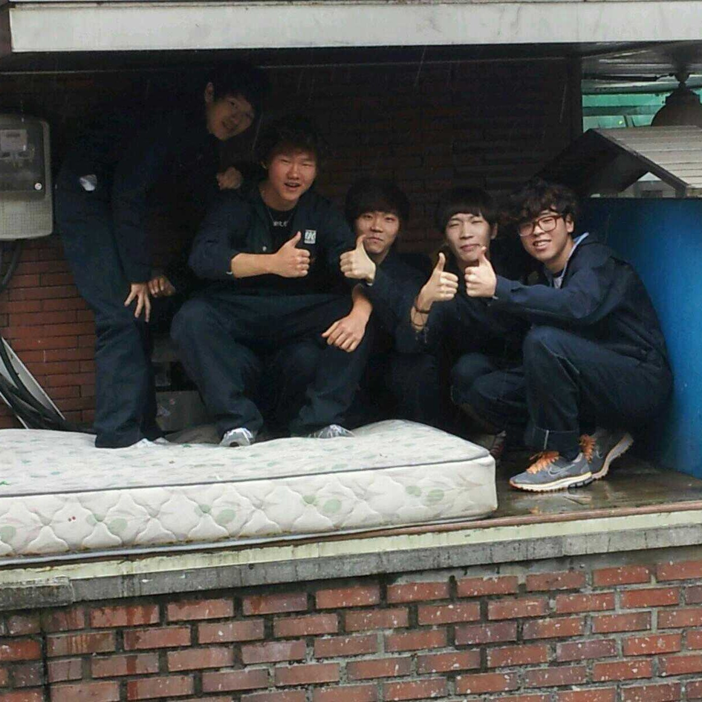

About Jayce
I was
I am
I will be
a car mechanic
a cook
a mechanical engineer

군대도 관련 보직으로 전역했고
졸업 후 관련 업체에서 근무하였습니다
직업전문학교에서 2년 과정을 수료했습니다
What I learned from this
수직적 문화
성실함
인내심
분석적 사고력
체력
스트레스 관리능력